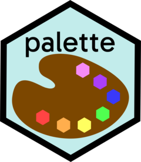

Package index
-
palette()validate_palette()is_palette()as_palette() - Create a palette
-
vec_ptype2(<palette>) - Palette Coercion
-
darken()lighten() - Control palette brightness
-
saturate()desaturate() - Control palette saturation
-
palette_browse()palette_browse_url() - Browse a palette on coolors.co
-
palette_decode_url() - Convert a URL to a palette
-
palette_function() - Build a palette function
-
plot_palette() - Plot Palette Colors
-
roygbiv - Rainbow Colors